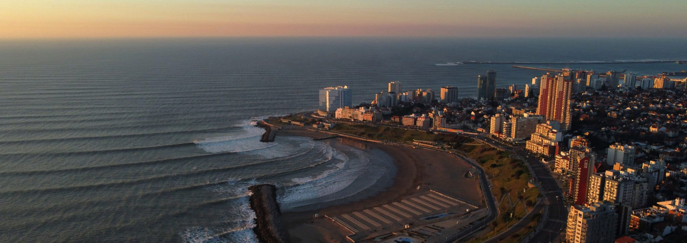

Mar del Plata

Mar del Plata



Algunas fuentes citan que fue Fernando de Magallanes, en 1519, el primer navegante europeo en navegar las
costas de lo que un día sería la ciudad de Mar del Plata, basándose en su referencia a una Punta de Arenas
Gordas, que algunos identifican con las playas de Punta Mogotes.
Sin embargo, el primero en describir
fehacientemente en la cartografía de su tiempo lo que hoy conocemos como Cabo Corrientes, fue el marino y
corsario inglés Sir Francis Drake en su viaje alrededor del mundo de 1578, bautizando al lugar como Cape
Lobos, debido a la abundancia de lobos marinos en sus playas.

Posteriormente éstas fueron abandonadas ante la hostilidad de la tribus tehuelches; por su parte la costa de la actual ciudad era conocida como "La Lobería Grande", debido a la presencia de lobos marinos ya citada por Drake. No se asentaron nuevos pobladores de origen europeo en el área hasta 1856 cuando, a raíz de un incremento de las relaciones comerciales con Brasil, se instaló un establecimiento saladeril de carne vacuna a cargo del portugués (ex cónsul en Buenos Aires) Don José Coelho de Meyrelles. Este nuevo establecimiento produjo la aparición de una población estable, la cual comenzó a llamarse Puerto de la Laguna de los Padres. Don Patricio Peralta Ramos compró estas tierras a Coelho de Meyrelles en 1860, y trabajó intensamente para el desarrollo del área. Trece años más tarde fue construido un templo cristiano: la Capilla Santa Cecilia, cuyo nombre le fue dado honrando a la esposa de Peralta Ramos, Doña Cecilia Robles.
En 1873 fueron iniciadas las gestiones ante el gobierno provincial, para que se reconociese a la población
del Puerto de la Laguna de los Padres. El 10 de febrero de 1874, es reconocido como pueblo y se toma esta
fecha como momento de fundación de Mar del Plata. Ya en 1879 se dividió en los partidos de Balcarce y de
General Pueyrredon y no será hasta julio de 1907 que el gobierno provincial aprueba el proyecto que declaró
ciudad a Mar del Plata.
El siglo XX comienza con un alto nivel de desarrollo para la ciudad que empieza a catapultarse como el
referente turístico del país. Además, con la creación del puerto en 1924 también se forja una parte de la
identidad de la ciudad, atrayendo a su vez a una importante colonia de inmigrantes italianos.